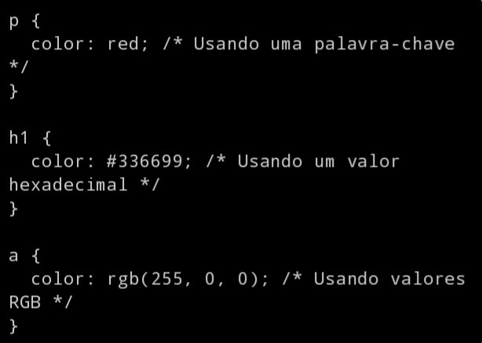

A aplicação de cores desempenha um papel crucial no design de
páginas da web, influenciando a primeira impressão dos visitantes e
afetando a usabilidade e a compreensão das informações apresentadas.
Neste artigo, exploraremos algumas das diversas técnicas e
ferramentas para aplicar cores de forma eficaz em elementos HTML e
CSS, capacitando designers e desenvolvedores a criar experiências
visuais envolventes e informativas na web.
Usando o CSS
A linguagem CSS (Cascading Style Sheets) desempenha um papel
fundamental na criação de designs atraentes e na formatação de
páginas da web. Ela permite controlar a aparência visual de
elementos HTML, tornando possível personalizar layouts, cores,
tipografia e muito mais. Para apropriar-se da estilização das cores
é necessária a compreensão mínima de pelo menos dois aspectos
essenciais do CSS: os seletores e as propriedades de cores.
Seletores
Os seletores CSS são uma parte fundamental da estilização de
páginas da web, permitindo direcionar elementos HTML específicos
para aplicar estilos personalizados. Vamos explorar alguns
exemplos de seletores CSS para entender melhor como funcionam:
Seletor de tipo
O seletor de tipo é simples e direto. Ele seleciona todos os
elementos de um determinado tipo. Por exemplo, o seletor `p`
aplica estilos a todos os parágrafos em uma página.
Exemplo de seletor de tipo
Seletor de classe
O seletor de classe permite direcionar elementos que têm uma
classe específica. Isso é útil para aplicar estilos a elementos
semelhantes, mas não todos. Por exemplo, com HTML como este:
Exemplo em HTML de seletor de classe
O CSS pode ser:
Exemplo de seletor de classe
Seletor de ID
O seletor de ID é usado para aplicar estilos a um único elemento
com um ID específico. É menos comum do que os seletores de
classe, mas ainda útil. Por exemplo, com HTML como este:
Exemplo em HTML de seletor de ID
O CSS pode ser:
Exemplo de seletor de ID
Seletor de atributo
Os seletores de atributo permitem selecionar elementos com base
em seus atributos. Por exemplo, para selecionar todos os links
que abrem em uma nova guia:
Exemplo de seletor de atributo
Esses são apenas alguns exemplos dos muitos seletores CSS
disponíveis. A combinação de seletores e propriedades CSS oferece
um amplo leque de opções para personalizar a aparência de páginas
da web e criar designs únicos e atraentes.
Propriedades de cores
As propriedades de cores desempenham um papel vital na paleta
visual de uma página da web. Com CSS, é possível definir cores
para texto, fundos, bordas e outros elementos. Isso oferece
flexibilidade para criar combinações de cores atraentes que se
alinham com a identidade de uma marca ou o tema de um site.
Utilizando a propriedade `color`
A propriedade `color` define a cor do texto dentro de um
elemento HTML. Você pode especificar uma cor usando diferentes
tipos de referência, como as apresentadas em modelos:

Exemplo da propriedade color
Utilizando a propriedade `background-color`
A propriedade `background-color` define a cor de fundo de um
elemento HTML. Você pode personalizar o fundo de elementos como
divs, parágrafos ou até mesmo a página inteira: